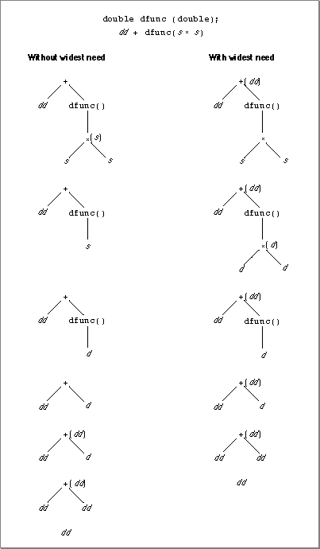
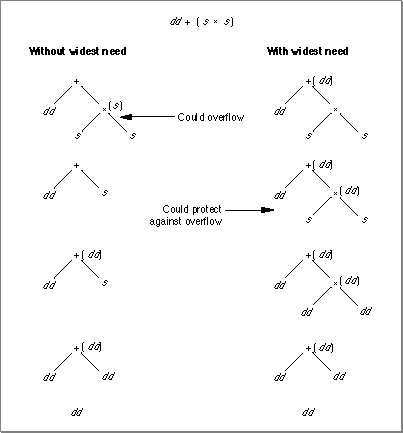

Comparisons of Expression Evaluation Methods
You can think of the difference between using and not using widest-need evaluation
as the way these two expression evaluation methods navigate the parse tree for a complex expression. Widest-need evaluation determines the evaluation format of
the topmost expression first and enforces that format on all lower expressions. If a complex expression is evaluated without widest need, the evaluation format of the bottommost expression is determined first, and the results are converted to wider formats as wider formats are encountered working back up the tree.Figure 3-3 shows how an expression is evaluated using both methods. In this example, dd is a double-double format constant or variable, d is double format, and s is single format. The minimum evaluation format is single. This expression makes a call to a function named
dfunc, which takes a parameter of typedoubleand returns a double value.If this expression is evaluated without widest need, the evaluation format of the multiplication operation (s
*s) is determined first without regard to the rest of the expression. Its semantic type is single, which is the same as the minimum evaluation format, so it is evaluated in single precision. Its result is then converted to double precision when it is passed to the functiondfunc, which takes a double parameter. The function returns a double result. The next expression is the addition operation, which has a semantic type of double-double. The addition will be performed in double-double precision because double-double format is wider than the minimum evaluation format. The double-format return value fromdfuncis converted to double-double, the addition is performed, and a double-double result is returned.If this expression is evaluated with widest-need evaluation, the evaluation format of the addition operation is determined first. All of the variables in the expression that are not assigned to function parameters or not part of an assignment statement or cast are looked at to determine the evaluation format. In this expression, the two variables considered are the dd variable and the
dfuncfunction call. Because dd is double-double format, the evaluation format of the addition operation is double-double. Now, the double-double format is applied down the parse tree to the operands of the addition operation. The first operand is already in double-double format. The second operand is a function call. As explained on page 3-6, function calls are not subject to the usual arithmetic conversions, so their evaluation formats are determined independently of the outer expression and their results are determined before any conversion takes place. The evaluation format for the assignment of values to the parameters ofdfuncis double becausedfunctakes a parameter of typedouble. The multiplication operation is an operand to this operation, so the multiplication is performed in double precision. The result ofdfuncis returned in double format, then is converted to double-double format before the addition is performed.Figure 3-3 Evaluating an expression with a function call

Figure 3-4 shows how widest-need evaluation protects against midexpression overflow and underflow better than expression evaluation methods that do not use widest need. In this example, s denotes a single-format variable or number, d is double format, dd is double-double format, and the minimum evaluation format is single.
Figure 3-4 Evaluating an expression with arithmetic operations

Without widest-need evaluation, the expression in Figure 3-4 is considered as two separate simple expressions. The multiplication operation (s
*s) is considered first. Its semantic type (single format) is the same as the minimum evaluation format, so the multiplication is performed in single precision. The semantic type of the addition operation is double-double, which is wider than the single minimum format. The addition operation is evaluated in double-double precision, so the value of its single-format operand is converted to double-double format before the result is calculated.With widest-need evaluation, all of the operands in the complex expression are looked at first to determine the semantic type. The semantic type is double-double because of the double-double variable. This means that the multiplication of the two single-format variables is performed in double-double precision.
Suppose that the two single variables have the values 1038 and 10, respectively. Multiplying these two values produces 1039. However, 1039 is out of the range of single format. If these numbers are multiplied in single precision (that is, if widest-need evaluation is not used), it will produce +
and a floating-point overflow exception. If the multiplication is evaluated in double-double precision (that is, if widest-need evaluation is used), the correct result is returned because 1039 is within the range of the double-double format.